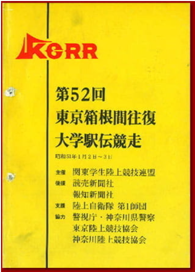

Hakone Ekiden (prefectures and high schools)
箱根駅伝出身高校別代表数 第５３大会～第９９大会
箱根駅伝出身高校別代表数
箱根駅伝出場回数
箱根駅伝出場回数
Saijo's Home Page
Hakone Saijo
選手 (出場・補欠)
①北海道
②青森県
③岩手県
④秋田県
⑤宮城県
⑥山形県
⑦福島県
⑧茨城県
⑨栃木県
栃木県における箱根駅伝選手
⑩群馬県
⑪埼玉県
⑫千葉県
⑬東京
⑭神奈川県
⑮～㉗ ㉙～ データ調査中
㉘兵庫県
（間違いを犯した場合、または何か新しいことを知っている場合は、連絡してください）
まだ分からない
まだ分からない
2023.1.8
誰かが大学校の駅伝部に連絡して、第52大会以前の箱根駅伝のプログラムがあるかどうかを確認する方法はありますか？
第52大会以前の選手についてもっと知りたい。特に栃木県からの選手。
(母校など)
